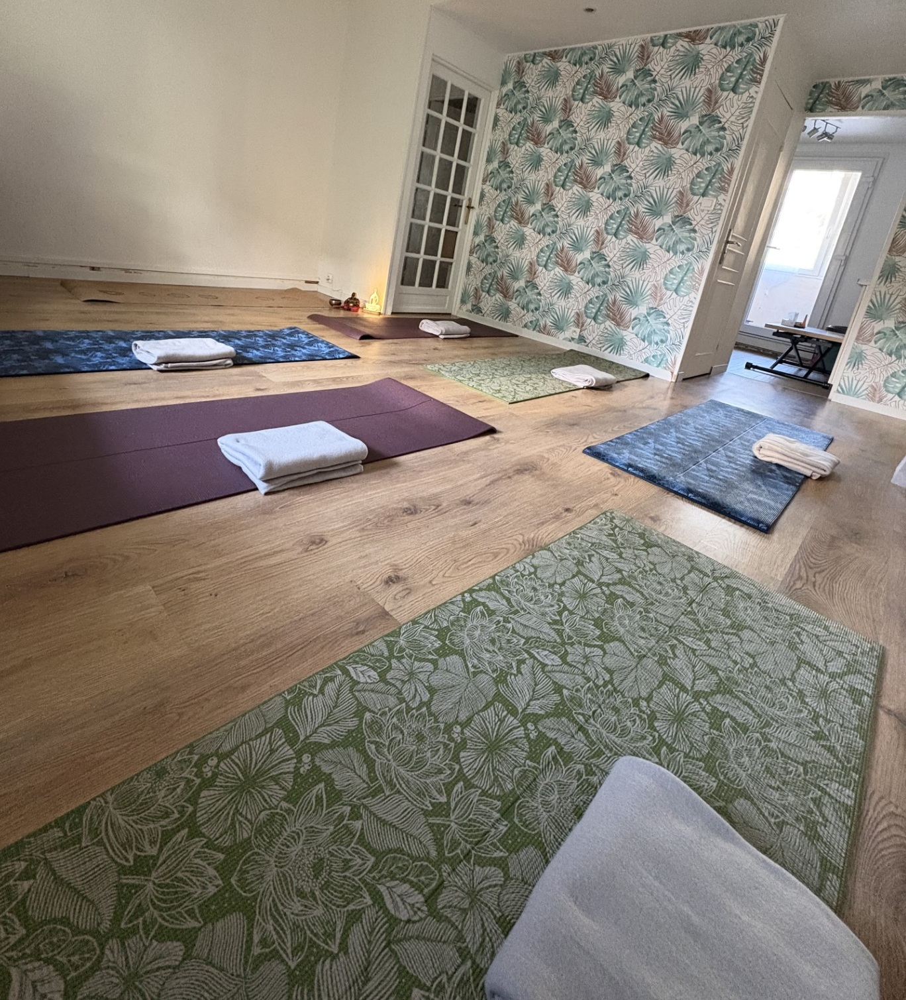

Cours de Yoga à Gagny – Studio Majoh
Pratiquez le yoga dans un cadre intimiste à Gagny, en petit groupe de 6 personnes maximum. Yoga douceur, Hatha flow et yoga sur chaise au Studio Majoh, à 10 minutes à pied de la gare RER E. Cours particuliers à domicile et en entreprise également proposés.
Voir le planning
Le Studio Majoh
Un espace chaleureux et lumineux à Gagny, pensé pour accueillir jusqu'à 6 personnes dans une ambiance conviviale et bienveillante.

Adresse & accès
13 rue René Baschet, 93220 Gagny
Résidence des Grands Coteaux, à côté du parc Courbet.
- Transport : 10 minutes à pied de la gare Gagny RER E
- Stationnement : libre dans les rues alentours
- Accès : résidence fermée, sonnez à l'interphone à votre arrivée
- Capacité : 6 personnes maximum par cours
- Matériel : tapis et accessoires fournis
Planning des cours collectifs
Cours toute l'année, y compris pendant les vacances scolaires. Inscription obligatoire — places limitées à 6 personnes.
Mardi soir
19h30 – 20h30
Hatha flow
Une pratique dynamique et fluide pour relâcher les tensions de la journée et se reconnecter au corps en mouvement.
Samedi matin
10h – 11h
Yoga douceur sur tapis
Mobilité, respiration et étirements doux pour bien commencer le week-end.
Samedi matin
11h30 – 12h30
Yoga sur chaise
Pratique douce et accessible, idéale pour les seniors, les personnes à mobilité réduite ou pour qui souhaite une approche en douceur.
Vous préférez pratiquer depuis chez vous ? Découvrez nos cours de yoga en ligne.
Tarifs des cours au studio
Première séance
10 €
Tarif découverte pour votre tout premier cours au studio (mardi ou samedi).
Séance à l'unité
20 €
Pour pratiquer ponctuellement, sans engagement.
Carte 5 cours
95 € · 19 €/séance
Idéal pour découvrir le yoga sur quelques semaines.
Carte 10 cours
180 € · 18 €/séance
Pour ancrer une pratique régulière.
Carte 15 cours
225 € · 15 €/séance
La formule la plus avantageuse pour les pratiquants assidus.
Cours particuliers & entreprise
Envie d'un accompagnement entièrement personnalisé ? Des cours particuliers sont proposés à domicile à Gagny et alentours, ainsi qu'en entreprise pour favoriser le bien-être au travail.
À domicile — 1 personne
55 € / heure
Cours individuel chez vous, totalement adapté à votre niveau et à vos besoins.
À domicile — duo
80 € / heure
Pratiquez à deux dans le confort de votre domicile, idéal pour partager un moment de détente.
En entreprise
Sur devis
Séances collectives pour vos équipes. Contactez-moi pour un devis personnalisé selon vos besoins.
À qui s'adressent ces cours ?
Débutants
Découvrez le yoga en douceur, sans pression ni performance, dans un cadre bienveillant.
Seniors
Une pratique respectueuse du corps et des articulations, accessible à tous les âges.
Personnes stressées
Un moment pour ralentir, respirer et relâcher les tensions du quotidien.
FAQ – Yoga à Gagny
Le Studio Majoh se situe au 13 rue René Baschet, 93220 Gagny, dans la Résidence des Grands Coteaux, juste à côté du parc Courbet. Il est à environ 10 minutes à pied de la gare RER E de Gagny.
Le studio se trouve dans une résidence fermée. Il vous suffit de sonner à l'interphone à votre arrivée. Le stationnement se fait dans les rues alentours — la disponibilité varie selon les horaires, pensez à arriver quelques minutes en avance.
Mardi 19h30 – 20h30 : Hatha flow
Samedi 10h – 11h : Yoga douceur sur tapis
Samedi 11h30 – 12h30 : Yoga sur chaise
Les cours ont lieu toute l'année, y compris pendant les vacances scolaires.
Première séance découverte à 10 € pour les nouveaux pratiquants.
Séance à l'unité : 20 €
Carte 5 cours : 95 €
Carte 10 cours : 180 €
Carte 15 cours : 225 €
Oui, l'inscription est obligatoire. Les cours sont limités à 6 personnes maximum pour garantir un accompagnement personnalisé. La réservation se fait directement en ligne via le calendrier en bas de cette page.
Oui, des cours particuliers sont proposés à domicile à Gagny et alentours : 55 € pour une personne, 80 € pour un duo. Les séances sont entièrement adaptées à votre niveau et vos besoins.
Oui, des séances de yoga en entreprise sont proposées sur devis. Contactez-moi par mail à majoh.yoga@gmail.com ou par téléphone au 06 15 27 10 22 pour discuter de votre projet.
Oui, le yoga sur chaise est une pratique douce et sécurisée, idéale pour les seniors, les personnes à mobilité réduite, ou toute personne souhaitant pratiquer sans descendre au sol.
Réservez votre cours au Studio Majoh
Offrez-vous un moment de détente et de mobilité dans un cadre intimiste à Gagny. Profitez de votre première séance à 10 € pour découvrir la pratique en toute sérénité.
Voir les disponibilités